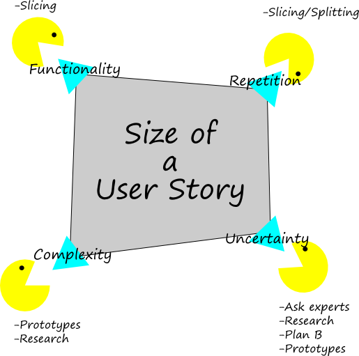

Reducing the size of a User Story to fit in a sprint
v0.4
Motivation
User Stories should be small enough to fit easily into one Sprint. The better their rank in the Product Backlog the smaller they should be. The standard approach would be to split the User Story in vertical slices. If this is not possible or not enough other techniques need to be used.
A warning
Estimates should not be the goal as in most cases they do not add value. Although making estimates will positively impact discussions regarding an User Story. The goal of this reducing techniques is the same: Encourage discussions and a little bit of risk management.
Concept

What defines the size of a User Story?
I really like the size defintion by Ian Goldstein. I have swapped the Risk component with Uncertainty as this seems to be better understandable when teaching. The following three dimensions compose the size of a User Story:
- Functionality: The amount of user functionality covered.
- Repetition: The amount of similar work to do e.g. refactoring one class has a smaller size tha refactoring 100 classes (in general)
- Complexity: The difficulty level of the work e.g. optimizing a complex ranking algorithm is bigger than implementing simple Bubble Sort.
- Uncertainty: The amount of certainty that everything goes "according to plan" e.g. using an unknown library for implementing a User Story might not work out as expected and thus takes longer to implement and test.
Resizing techniques for each dimension
Some techniques acknowledge that there are times when it is not (easily) possible to deliver the customer value of a User Story in one Sprint. Especially when working with legacy applications this can occur. The best thing would be to recognize this problem and adress it. Sometimes this is not desireable e.g. team has other problems than this and cannot do even more improvements at the same time. Nevertheless the problem should be acknowledged and be planned in with the following thought in mind: "We have a problem there and we are doing ...
for now to adress it."
Functionality
Apply here the classical vertical slicing techniques. There are numerous good books and articles on this. Keep in mind that this is the only dimension which may really reduce the amount of Story Points of a User Story.
Repetition
Let's suppose it is needed to refactor 100 similar classes and this is simply to big to be achievable in one Sprint. The following techniques might help in this case:
- Slice it user components (vertically): Vertical slices should also have an impact on the touched classes. If 100 classes are representing 4 related but different workflows you might get 4 User Stories out of it. This is the optimal solution as you will deliver real value at the end of the Sprint.
- Slice it by technical components: Especially in legacy applications the architecture of the app cannot keep up with the fast delivery mechanism of Agile development. In that case the architecture is not emerged and thus it is difficult to make a big impact by vertical slicing. Try slicing it by technical component e.g. the 100 classes are distributed over 6 assemblies. So you can make 6 "technical" User Stories - one for each assembly. It is not optimal but at least you have a checkpoint after one Sprint.
Complexity
Optimizing a complex algorithm takes more effort than implementing Bubble Sort. The following techniques support one to reduce this dimension:
- Prototypes: Perfect for trying out designs and ideas. Just make sure that you are really creating prototypes and throwing them away afterwards.
If this is not the case you are putting to much effort into your prototypes and your teams performance will suffer.
- Research: Good old real research is often overlooked.
Uncertainty
This is the dimension of the known unknowns. Will the new library work out as expected? Who knows without knowledge? You can use the follow techniques
to attack this dimension:
- Ask experts: If the guy from the other department has already worked with the specific library it is a good idea to ask him for some hints :-).
- Research: Check out those API docs/tutorials/...
- Plan B: What are we going to do if the library is not suitable? Do we have a Plan B? What is your contingency plan? Obviously this can also increase the size.
- Prototypes: Try out the things you need with the new library.
Final thoughts
Keep in mind that every activity which do not generate value is waste. So vertical slicing is almost always the best idea to fit User Stories in a Sprint.
The additional techniques can be easily be used for covering up impediments, so use them with care.